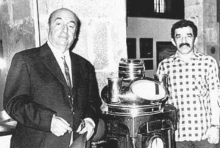

Valparaisolu Avare
Valparaiso, Santiago yakınlarındadır. Tepelerinde, koskoca sütunları andıran, düşmanca yükselen ve güzel çiçekler açan kaktüslerin yetiştiği sivri dağlar, bu iki kenti birbirinden ayırır. Ne olduğunu hiçbir zaman söyleyemeyeceğim bir başka şey daha ayırır Valparaiso’yu Santiago’dan. Santiago, yakalanmış bir kenttir; kardan oluşan bir duvarla çevrilidir. Valparaiso ise kapılarını açar, açık denizlere, sokaklarındaki bağırıp çağırmalara, çocukların gözlerine.
Gençliğimizin en ateşli zamanlarında daima sabaha karşı uykusuz, cebimizde birkaç kuruş, üçüncü mevki trenle Valparaiso’ya gitmeye karar verdiğimiz çok olmuştu. Şairdik, ressamdık, yirmi yaşında ya da daha gençtik, yanımıza aldığımız en değerli şey düşüncesiz bir çılgınlıktan başka bir şey değildi: Valparaiso’nun yıldızı çekiyordu, çağırıyordu bizi.
Aradan yıllar geçtikten sonra nedeni bilinmez bu çağrıyı bir başka kentte daha duydum. Madrid’de yaşadığım yıllardaydı. Gecenin geç saatlerinde terk ettiğim tiyatrodan sonra saatlerce oturduğum bir birahanede ya da yürüdüğüm sokaklarda, birden beni çağıran Toledo’ların sesini, hayaletlerinin sessiz sesini, suskunluğunun sesini duyardım. Ve bu delilik anında, gençliğimdeki çılgın arkadaşlarım kadar çılgın dostlarla yola koyulurduk. Tajo’nun kumları üstünde giysilerimizle uykuya dalmak için.
Bilmiyorum, Valparaiso’ya yaptığımız o eşsiz yolculuklardan birini niçin o denli iyi hatırladığımı. Gemiyle Fransa’ya yola koyulacak bir şair ile bir ressama veda edecektik. Ancak bir araya getirebildiğimiz parayla, içinde farelerin dolaştığı bir handa bile gecelememiz mümkün olmadığından, Valparaiso’da yerleşmiş olan çılgın dostlarımızdan Novoa’ya gitmeye karar verdik. Onun da evine varmak kolay değildi. Tepeleri aşarak, sanki sonsuza doğru tırmandık. Akşamın karanlığında zorlukla yürürken, önümüzde giderek bize yol gösteren Novoa’nın siluetini kaybetmemeye çalışıyorduk.
Karmakarışık sakalı ve uzun bıyıklarıyla heybetli bir görünüşü vardı. Bizim körler gibi tırmanmaya çabaladığımız o tepelerde, sırtına attığı pelerinin etekleri kanatlar gibi iki yana sallanıyordu. Hiç durmadan konuşuyordu. Karanlık ve ıssız topraklarda doğmuş bir azizi andıran görünüşüyle tepeye tırmanan Novoa’nın peşindeydik.
Sonunda evine vardık. İki odalı bir kulübeydi burası. Odanın birinde aziz dostumuzun yatağı seriliydi. Öteki odada ise koskoca bir koltuk duruyordu. Sırtı güllerle işlenmiş bu eski koltuk, aslında Victoria stilinin güzel bir örneğiydi. Üzerinde benim yatmama izin verildi. Arkadaşlarım ise tahtalara gazete kağıtları yaydılar ve haberler ile makaleler üstünde gecelediler.
Biraz sonra soluk almalar ve horultulardan, hepsinin uyuduğunu fark ettim. Bana gelince, bu koskocaman koltukta oturduğum yerde, uyumak istememe rağmen uyuyamıyordum. Issız dağ tepelerinin sessizliğini duyuyordum. Arada sırada uluyan köpekler ya da uzakta denizden gelen bir geminin düdük sesi, Valparaiso’da çoktan gece olduğunu söylüyordu bana.
Birden baştan çıkarıcı bir şeyin ruhumu doldurduğunu hissettim. Dağların havası, çayırlardan ve bitkilerden yükselen kokuydu bu. Çocukluk günlerimden tanıyordum onları, ama büyük şehir hayatında unutmuştum. Uykuyla barışmıştım. Çocukluk topraklarımda salıncak ninnisini dinliyordum şimdi. Ormanın bu mis kokulu neşeli titreyişi, kokuların bu bakireliği nereden geliyordu? Koltuğun kenarlarında kumaştan cepler olduğunu fark ettim. Kurumuş otlar, küçük dal parçaları, mızrağı andıran yumuşak ve sert yapraklar buldum. Bizim aziz dostumuzun büyük adımlarla dolaştığı tepelerde iri elleriyle topladığı bitkilerdi bunlar. Sağlık dolu bitki kokularının nereden geldiğini bulduktan sonra, mutlu bir uykuya daldım.
Valparaiso’nun daracık sokaklarından birinde birkaç hafta Don Zoilo Escobar’ın karşısındaki evde oturdum. Sokak öylesine dardı ki, neredeyse balkonlarımız birbirine değecekti. Komşum her sabah erkenden kalkıp, balkona çıkar ve jimnastik yaparak, kemiklerinin altında belli olan ciğerlerine temiz hava doldururdu. Giyimi bir denizci ile bir meleği andıran bu adam, yıllar önce şileplerde kaptanlık yapmıştı. Her gün eski üniformasını özenle fırçalardı. Dolabında sakladığı hazineleri arasında asılı duran bu siyah üniformayı giydiğini hiç kimse görmemişti.
En büyük ve en değerli hazinesi, Stradivarius kemanıydı. Bunu bütün hayatı boyunca üzerine titreyerek saklamış, ne kendi, ne de bir başkasına dokundurtmuştu. Don Zoilo bu kemanı New York’ta satmayı düşünüyordu. Bu şehirde kemanına bir servet vereceklerine inanıyordu. Bazen eski dolabından onu çıkarır ve dinsel bir hayranlıkla seyretmemize izin verirdi. Don Zoilo Escobar günün birinde kuzeye doğru yolculuk yapacak ve kemansız geri dönecekti. Değerli yüzükler getirecek, ağzında uzun yılların doğurduğu boşlukları da altın dişlerle doldurtacaktı.
Bir sabah, balkona çıkmadı. Şehrin tepelerindeki mezarlıkta toprağa verdik onu. Kemikleri çıkmış vücudunu yıllar sonra ilk kez saran siyah üniformasını giydirdik. Stradivarius’un telleri arkasından ağlayamadı. Hiçbirimiz keman çalmasını bilmiyorduk. Dolabı açıldığında da keman bulunamadı. Belki denize, belki de Don Zoilo’nun hayalleri gerçekleşsin diye New York’a uçmuştu.
Valparaiso suskundur, yaralıdır, eğri büğrüdür. Şehrin yamaçlarında yoksul halk üst üste yaşar. Sayısı bilinmeyen bu topluluğun, ne yediği ne de giydiği bilinir. (Ne yemediği ve ne giymediği de!) Kuruyan çamaşırlar her evin dalgalanan bayrağıdır. Kapıların önündeki çamurdaki ayak izleri de bu arı kovanlarında kaç insanın yaşadığını ve aşkın hiç sönmediğini belli eder.
Deniz kıyısındaki düzlüklerde, çok az insanın girip çıktığı, balkonlu ve kepenkleri daima kapalı evler vardır. Bu evlerin arasında, bir kâşifin güzel evi de vardı. Günün birinde onu ziyarete gittim. Kapının bronz tokmağını defalarca vurduktan sonra, korkak adımların yaklaştığını duydum. Hafifçe açılan kapının aralığından kuşku dolu bakışlar beni tepeden tırnağa inceledi. Dışarıda kalsam hoşuna gidecek gibiydi. Evin yaşlı hizmetçisiydi. Bu gölgeden, adım atarken sallanan önlüğünün sesi çıkıyordu sadece.
Kaşif de çok yaşlıydı. Pencere kepenkleri sıkı sıkı kapalı koskoca evde, o ve hizmetçi kadından başkası oturmuyordu. Evin odalarını ve duvarlarını dolduran Tanrı resimleri koleksiyonunu görmek için gelmiştim. Koridorları ve duvarları süsleyen kırmızı, kahverengi biblo ve heykellerde, beyaz gri boyalı maskelerde ve çeşitli biçimlerde, okyanus tanrılarının unutulmuş anatomilerini görmek mümkündü. Polinezya saç örnekleri, leopar derisi kaplı tahta kalkanlar, iri insan dişlerinden yapılmış kolyeler, belki köpüklü denizlere dalmış kayık kürekleri, korku veren koskoca bıçaklar, duvarlarda gümüş renkleriyle loşluğu aydınlatıyordu. Erkek tanrı heykellerinin cinsiyet organlarının, hizmetçi kadının giydiği önlüğün kumaşından yapılmış küçük parçalarla örtülmüş olduğunu fark ettim.
Yaşlı kâşif, hiç sesini çıkarmadan savaş ganimetleri arasında dolaşıyordu. Bütün zamanını bu eşyalara vermiş ve hâlâ da vermekte olan bir adamın tavrı ilgimi çekiyordu. Küçük beyaz sakalı, Samoa’dan getirdiği bir tanrı heykelinin sakalını andırıyordu. Düşmanlarını izlediği ya da antilop ve kaplanları vurduğu filinta ve tabancalarını da gösterdi. Mırıltı halindeki ses tonunu değiştirmeden, serüvenlerini anlatıyordu. Kapalı kepenklerin arasında dolaşıyor; odalara hayat veriyordu.
Kendisine veda ederken, Pasifik adalarına gitmeyi planladığımı, altın kumlu kıyılara doğru yola çıkmayı arzuladığımı açıkladım. Bunun üzerine ihtiyar önce etrafına bakındı ve küçük beyaz sakalını kulağıma yaklaştırarak, titreyen bir sesle fısıldadı: “O duymamalı ve bilmemeli, ben de bir yolculuğa hazırlanıyorum.”
Bir süre parmağı dudağında, sanki çalıların ötesinde yürüyen bir kaplanı dinlermiş gibi öylece kaldı. Sonra, arkamda kapı kapandı. Birdenbire ve karanlık, Afrika’da gece olmuş gibi.
Komşularıma sordum:
“İlginç birisi geldi mi buralara? Valparaiso’ya tekrar gelmeye değecek mi?”
Yanıt verdiler:
“Pek değişiklik yok, sana anlatacak. Fakat şu sokağı yukarı doğru yürürsen, muhakkak Don Bartolome’ye rastlarsın.”
“Nasıl tanıyacağım onu?”
“Tanımaman mümkün değildir. Atlı bir arabayla dolaşır hep.” Birkaç saat sonra, elma almakta olduğum manavın önünde atlı bir araba durdu. İçinden uzun boylu, kaba tavırlı ve koyu renk elbiseli bir adam çıktı.
Bu adam da elma almak istiyordu. Omzundaki çimen yeşili papağanı uçarak, benim başıma kondu. “Don Bartolome siz misiniz?” diye adama sordum. “Evet, benim. Adım Bartolome’dir.” Pelerininin altındaki kılıcını çekti ve bana uzattı. Sonra sepetini, aldığı elma ve üzümlerle doldurdu. Uzun ve sivri kılıcının gümüş kabzasında çeşitli süsler vardı.
Bu adamı yakından tanıyamadım. Bir daha da görmedim. O gün kendisini saygıyla arabasına kadar götürdüm, hiç konuşmadan kapıyı açtım ve papağanı ile kılıcını uzattım.
Valparaiso’nun küçük dünyaları; derin bir şarap mahzeninin köşesine atılmış, kimin getirdiği bilinmeyen ve artık kimsenin almadığı sandıklar gibi anlamsız ve zamansız terk edilmiş dünyalardı. Belki bu gizli yerlerde, Valparaiso’nun bu ruhlarında bir dalganın her zaman için kaybolmuş yüceliği saklıydı. Her an homurdanan ve parlayan, denizlerin fırtınası, tuzu gibi. Bir deniz ki, tehdit edici ve içine kapanık. Anlaşılmayan bir ses ve hayallerin köpüğü olmuş bir hareket.
Bana rastlayan ilginç hayatlar ile liman arasındaki o büyük benzerlik benim için gerçekten şaşırtıcıydı. Yukarıda, tepelerde, insanların yaşadığı yamaçlarda yoksulluk, katran ve neşe karışımı bir madensuyu gibi fışkırıyordu. Vinçler, hamallar, insan çabaları, kıyı şeridini, kaçamak bir mutluluğun renkli maskesi gibi örtüyordu. Yamaçlardakiler aşağı inmiyordu; aşağıdakiler de yamaçlara çıkmıyordu. Sandıkları içinde kendi sonsuzluklarını gizliyorlardı. Koruyorlardı onu silahlarıyla. Bu arada unutulmak, bir sis gibi onlara yaklaşıyordu.
Valparaiso, arada sırada, yaralı bir balina gibi sarsılır. Havaya doğru yükselir, ölümle pençeleşir, ölür ve sonra yeniden hayata kavuşur. Bu kentte herkes depremleri anımsar. Bu anı; Valparaiso’nun yüreğini dolduran korkunun ölmeyen bir çiçeğidir. Her vatandaş burada doğuştan bir kahramandır. Limanın anıları arasında o kötü anlar, toprağın o ürperişi, derinlerden gelen titremeler ve homurtular da vardır. Sanki denizin altındaki, toprakların derinliğindeki bir kentin kulelerinde iki kat bir güçle çanlar çalmaya başlıyor, yukarıdaki insanlara artık her şeyin sonunun geldiğini bildiriyor.
Duvarlar yıkılıp, damlar çöker ve her şey tozun toprağın, yükselen alevlerin altında kalır, en son bağrışmalar da kesilir ve ölüm başladığı anda, son bir dehşet gibi denizden gelen koskoca dalgalar, ulaşabildikleri yerlere kadar, sanki bir öç alma tutkusuyla yaşamı söndürür.
Sonra yavaş yavaş yeni bir hayatın belirtileri görülür. İnsan ruhları kayaların arasına kaçıp, sığınacak yer arar. Büyük depremde sığınacak yer yoktur. Tanrılar gitmiştir. Mağrur kiliseler de evler gibi yerle bir olmuştur. Kızgın boğadan ya da onu kovalayan bir katilin bıçağından kaçan insanın korkusuyla, onu boğmak isteyen sulara kapılmamak için mücadele eden insanın korkusu aynı değildir. Yıkılmış evlerin üzerine, toz duman ağır ağır çöker. Geride, ölülerimiz ile biz kalırız. Ve niçin hayatta kaldığımızı bilemeyiz.
Merdivenler aşağıda ve yukarıda başlar. Kıvrıla kıvrıla inerler ve çıkarlar, saç teli kadar incelirler. Bazen dinlenecek yerleri vardır, bazen ise dimdiktirler. Çıkanın başını döndürür, aşağı düşürebilir. Genişlerler. Sonsuza giderler.
Ne kadar çok merdiven var? Ne kadar çok basamak? Basamaklarda kaç ayak, kaç yüzyıl merdivenleri inip, merdivenleri çıkmıştır? Domatesle, kitapla, balıkla, şişeyle, şarapla. Basamaklar aşınıp, oluklar meydana getirene kadar. Bu oluklardan yağmur sularının akması, oynaması ve ağlaması için acaba kaç bin saat geçmiştir?
Merdivenler!
Valparaiso kadar hiçbir kent, tarihinde merdivenleri böylesine hor kullanmamış, görünüşlerini böylesine değiştirmemiştir. Hiçbir kentin çehresinde, Valparaiso’nunki gibi bir yara izi yoktur. Bu iz, yamaçlarına oyulmuş basamaklarında hayatların hiç durmadan yukarılara, göğe çıktığını, hiç durmadan aşağı evrene indiğini belirler.
Merdivenler... basamaklarında kıpkırmızı çiçek açan dikenleriyle! Merdivenler... evinde onu yeni bir gülümsemenin ya da korkunç bir yalnızlığın beklediği denizcinin Asya yolculuğundan sonra tırmandığı! Merdivenler... sarhoşun kapkara bir göktaşı gibi düştüğü! Merdivenler... yamaçlara sevgi getiren güneşin üzerlerinde yükseldiği! Valparaiso’nun bütün merdivenlerini çıkarsanız dünyayı dolaşmış sayılırsınız.
Dertlerimin Valparaisosu!.. Güney Pasifik’in yalnızlığında neler olurdu! Yolunu şaşırmış bir yıldız mı yoksa parçaları bir faciayı yaşamış bir solucan mı?
Valparaiso’da gece! Dünyanın bir noktası aydınlanır ve boş evrende söner. Ateşböcekleri titreşir, tepelerin arasında altın bir at nalı yanmaya başlar. Sonra bomboş geceyi dolduran şekiller ışık getirir. Uzaktan duyulan nabız atışlarıyla, Aldebaran sarsılır. Cassiopeia rahip cüppesini gökyüzünün kapısına asar. Samanyolu’nda güneyin arabası sessizce ilerler. Sonra Sagittarius’un pençeleri arasından bir pırlanta düşer, tüylerinden bir pire sıçrar.
Valparaiso ateşli ve gürültülü, köpüklü ve orospuca doğmuştur.
Sokaklarının gecesi, karanlık perilerle dolar. Işıksız köşelerde kapıların kapandığı duyulur, eller birbirini bulur, güneyin çarşafları denizciyi baştan çıkarır. Polyanta, Tritetonga, Carmela, Flor de İos, Multicula, Berenice ve “Baby Sweet” birahaneleri doludur, denizden gelenleri korur, birbirlerini tamamlarlar ve benim yağmuru bol ırkımın melankolisi içinde kendilerini dansa verirler.
Limandan denize, dayanıklı büyük yelkenliler yola çıkar, balina avı için. Başka gemiler altın şehri Kaliforniya’ya yelken açar. Bazıları da yedi denizde dolaşır, sonra Şili’nin çölü altında nitrat arar.
Bunlar, büyük serüvenlerdir.
Valparaiso, her şeyin olduğu bir gece gibi parlar. Bütün dünyadan ona gelirler, konacak yer arayan güvercinler gibi gemiler. Güzel kokulu gemiler, büyük sandallar, aç firkateynler Horn Burnu’nu dolaşmak için uzun zaman harcadıktan sonra buraya gelirler... Karaya çıkan gemiciler doğru lokantalara koşarlar. Vahşi ve delicesine geçen günlerde, okyanuslar gezmiş bu insanlar Patagonya Boğazı’ndan söz eder, birbirleriyle anlaşırlar. Valparaiso’nun kendine tüküren ve de seven denizcileri memnun ettiği günler...
Valparaiso, dağın tepeleri üzerlerindeki insanları silkip atmaya, yamaçlarındaki evleri yıkmaya karar verir. Kırmızı toprağın ve yabani bitkilerin soluk yeşilleriyle kapladığı yamaçlar sallanır. Fakat evler ve insanlar, tepelere tutunurlar, oldukları yeri bırakmazlar, dişleri ve tırnaklarını dik yamaçlara geçirirler. Andların doğası ile deniz arasında kalan liman, insanların umut yeridir. Doğa ile insanın mücadelesinde insan kazanır. Her şey yeniden hayat bulur, evler renklenir. İlkbaharda doğayı dolduran renk renk çiçekler gibi. Kırmızı ve sarı, yeşil ve erguvan. Valparaiso gerçek bir liman gibi görevini yerine getirir. Denizlerin rüzgârında bayrağı dalgalanmış... şimdiyse karaya vurmuş, ama hâlâ yaşam dolu bir gemi gibi. Büyük Okyanus’un rüzgârı, bayrağı dalgalanan bir kent kazanmıştır.
Ben bu kokuların dolup taştığı yaralı tepelerde yaşadım; hayatın atardamarlarının uzayıp gittiği, bir trompetin kıvrımları gibi sonsuz tepelerdir buralar. Yamaçlarında küçük bir atlıkarıncaya rastlarsın, merdivenleri inen bir rahibi, elindeki karpuz dilimini dişleyen bir kız çocuğunu, kadınları ve denizcileri, çadırında sadece aslan terbiyecisinin uzun bıyığına yer olan minyatür bir sirki, bulutlara dayanmış bir merdiveni, yukarı doğru çıkan soğan yüklü bir asansörü, su taşıyan yedi eşeği, yangından dönen bir itfaiye arabasını, rafları yaşam ve ölüm dolu cam dolabı görürsün.
Bütün bu tepelerin derin anlamlı adları vardır. Bu adlar arasında bir yolculuk sonsuzdur. Çünkü Valparaiso’da yapılan yolculuk yeryüzünde sona ermez, sözlerde de. Neşeli tepe, kuş tepe, Palanco Tepe, hastanenin tepesi, masanın, gemi donanmasının, toprak eşyanın, cüce meşenin, Calahuala’nın, küçük değirmenin, badem ağacının, baykuşun, hapishanenin, tilkilerin, Dona Elvira’nın, Aziz Stefan’ın, Astorga’nın, Esmeralda’nın, Rodriguez’in, topçuların, süt veren ineklerin, gebe kadınların, mezarlığın, dikenlerin, İngiliz hastanesinin, Kraliçe Victoria’nın, meşenin, Aziz Johannes’in, Pocuro’nun, barınak limanının, keçi eti kasabının, Don Elias’ın, nöbet kulesinin, asmaların, ayva ağacının, öküzün, Florida’nın.
Bu kadar çok yeri dolaşmam mümkün değildi. Valpariaso’nun her yöresini gezebilmek için sekiz ayaklı deniz ejderhası olmak gerekir. Onun ölçülmezliğiyle yetinmek istiyorum, ama bu da bana yetmiyor. Renklerini, topraktan fışkıran bitkilerini, doruklarını ve derin uçurumlarını anlayamıyorum.
Yalnızca çan seslerinin, titreşimlerinin ve adlarının peşinden gidiyorum.
Adlarını izliyorum özellikle. Çünkü onların güçlü kökleri, havası, yağı, tarihi ve eserleri vardır. Hecelerinde de kan vardır.
Fare Deliğinde Bir Şili Konsolosu
Bir öğrenci edebiyat ödülü, yeni kitaplarımın tutulması ve ünlü paltom, sanatçı çevremin dışında da tanınmamı sağlamış, itibarımı artırmıştı. 1920’lerde ülkemizde kültür hayatı, birkaç örnek dışında Avrupa’nın etkisindeydi ve ona bağlıydı. Cumhuriyetçiler arasında sesi çıkanlar, kozmopolit bir tabakaydı. Önemli yazarlar da Paris’te yaşardı. Ülkenin büyük şairi Vicente Huidobro, şiirlerini Fransızca yazdığı gibi, bir süre sonra ön adını da Vincent’a çevirmişti.
Genç bir şair olarak ün kazanmaya başlamıştım ki, önüne gelen bana sormaya başladı:
“Ne yapıyorsunuz siz burada? Paris’e gitmelisiniz!”
Dostlarımdan biri, Dışişleri Bakanlığı’nda kısım şeflerinden biriyle görüşmemi öğütledi. Bu kimse beni hemen kabul etti. Şiirlerimi okumuştu.
“Çabalarınızı biliyorum. Oturunuz şu rahat koltuğa. Buradan meydan ve pazar çok iyi görülür. Bakın şu otomobillere. Hepsi bence gösteriş ve lüks. Daha genç bir şair olduğunuz için sevinmelisiniz. Görüyor musunuz şu köşkü? Benim aileme aitti. Şimdi ise ben bürokrasiyle çevrelendiğim bu delikte oturmak zorundayım. Değerli olan tek şey ruhtur. Çaykovski’yi sever misiniz?”
Sanat üzerine bir saate yakın konuştuktan sonra bana elini uzatarak, vedalaşırken: “Hiç merak etmeyin, konsolosluk görevleri kısım şefiyim ben,” dedi. “Dış ülkelerde bir göreve atandığınıza şimdiden emin olabilirsiniz.” İki yıl süreyle bu dikkatli ve her zaman yakın ilgi gösteren diplomatın karşısına çıktım durdum. Benim odaya girdiğimi görür görmez, sekreterlerinden birine üst perdeden sesleniyordu: “Şimdi kimseyle konuşamam,” diyordu. Sonra bana dönerek devam ediyordu. “Günlük işleri biraz unutmak istiyorum. Bu bakanlıkta ruh dolu tek şey, şairin ziyaretidir. İnşallah bizi hiç terk etmezsiniz siz.” Adamın doğru konuştuğuna yürekten inanıyorum. Sonra birden cins köpeklerden söz etmeye başlıyordu. “Köpek sevmeyen insan çocukları da sevmez.” Arkasından İngiliz romanından konuşuyor, ya da antropoloji, ispritizma konusuna dalıyordu. Vedalaşırken, ikimizin arasındaki büyük bir sır gibi, dış ülkelerdeki görevimin garanti olduğunu tekrarlayıp duruyordu. Bense o akşam, cebimde yemek parası olmamasına rağmen, yürürken hiç olmazsa bir konsolos gibi soluk alıyordum. Dostlarım ne yaptığımı sorduğunda da: “Avrupa yolculuğuna hazırlanıyorum,” yanıtını veriyordum. Bütün bunlar dostlarımdan Bianchi’ye rastlayana kadar sürdü. Bianchiler Şili’de soylu bir aileydi. Bu ailede ressamlar, halk müzisyenleri, hukukçular, yazarlar, kaşifler, dağcılar yetişmişti. Bir zamanlar elçilik yapmış olan dostum Bianchi, bakanlıkların girdisini çıktısını biliyordu. Bana sordu: “Atanman daha imzalanmadı mı?” “Her an çıkmasını bekliyorum. Bakanlıkta görevli sanat aşığı bir şef bana söz verdi.” Gülümsedi. “Gel, seninle bakana bir gidelim,” dedi. Sonra benim koluma girdi ve birlikte bakanlığın mermer merdivenlerini çıktık. Kapıdan içeri girdiğimizde bütün memurlar ve odacılar kenara çekildi. O kadar şaşırmıştım ki, ağzımdan tek söz bile çıkmıyordu. Hayatımda ilk kez bir dışişleri bakanı gördüm. Ufak tefek biriydi. Bunu örtmek için, bir zıplayışta yazı masasının üstüne oturdu. Dostum Bianchi, benim en büyük isteğimin, Şili’den başka ülkelere gitmek olduğunu söyledi. Bunun üzerine bakan, masanın kenarındaki bir sürü düğmeden birine bastı. Biraz sonra içeri giren şahıs, şaşkınlığımın daha da artmasına neden oldu. Benim edebiyatçı dostum, kısım şefi odaya girmişti. Bakan, “Hangi görevler ve hangi kentler boş?” İyi giyimli memur, bu defa benimle Çaykovski’den söz edemeyecekti. Bütün dünyaya yayılmış ve çoğunun adını bile duymadığım bir sürü kenti ezbere sıralayıverdi. Bütün bu kent adları arasında biri aklımda kaldı: Rangoon. Bakan, “Nereye gitmek istiyorsunuz, Pablo?” diye sordu. Hiç düşünmeden: “Rangoon’a,” dedim. “Atayınız oraya,” diye emretti bakan, edebiyatçı kısım şefine. Biraz sonra da atanma yazım elime verildi. Bakanın odasında bir dünya küresi vardı. Bianchi ile ben bu kürede, bilinmeyen kent Rangoon’u aradık. Eski küre Asya kıtasında bir çukuru gösteriyordu. “Rangoon! İşte Rangoon burada.” Birkaç saat sonra şair dostlarımla buluşup da, atanmamı kutlamak istediğimizde, kentin adını filan unutmuştum. Coşkunluk içinde onlara, o efsanevi doğuda konsolosluk görevi yapacağımı anlattım. Gideceğim kentin de yeryüzünde bir çukurda olduğunu söyledim:
Montparnasse
1927 yılının haziranında uzak ülkelere doğru yola koyulduk. Buenos Aires’te benim birinci sınıf biletimi, iki üçüncü sınıf biletiyle değiştirerek, Baden gemisine bindik. Bu Alman gemisinde üçüncü sınıfın beşinci sınıftan farkı yoktu. Yemek iki postada yeniyordu. İlk postada Portekizli ve Galiçyalıların çoğunlukta olduğu yolculara acele acele yemek servisi yapılıyordu. İkinci postada çeşitli ülkelerden yolcular yemek yiyordu. Bunların arasında da Latin Amerika madenlerinden ya da fabrikalarından dönen Almanlar çoğunluktaydı.
Beraber yolculuk yaptığım Alvaro, hemen kadın yolcular arasında bir sınıflama yaptı. Usta bir kadın avcısıydı. Kadınları iki sınıfa ayırıyordu. Birinci sınıfa, mücadele edilmesi gerekenler dahildi. Kırbacın altına yatanlar ise ikinci sınıfa giriyordu. Oysa bu sınıflama her zaman doğru çıkmıyordu. Bir kadının ilgisini ve aşkını kazanmak için bir sürü yol biliyordu.
Güvertede gezerken, ilgisini çeken birkaç kadın gördüğünde, hemen elimi eline alıyor ve fal bakıyormuş gibi bir şeyler söylemeye başlıyordu. Kadınlar ilk önce ilgilenmiyorlardı, ikinci kez yanımızdan geçtiklerinde duruyor ve Alvaro’dan onların da el falına bakması için ricada bulunuyorlardı. Kadının elini eline alan dostum, önce gelecek üzerine bir şeyler anlatıyor, sonra yavaş yavaş tuttuğu eli okşuyor, sonunda bizi kamaramızda ziyaret edecekleri kehanetinde bulunuyordu.
Yolculuk benim için birkaç gün sonra değişmeye başladı. Yemeklerde hemen hemen her gün patates verildiğinden yakınan yolcuları, uçsuz bucaksız Atlantik’i ve mavi gökyüzünü görmüyordum artık. Bütün dikkatimi, Rio de Janeiro’da ebeveynleri ve iki erkek kardeşiyle gemiye binmiş olan, iri siyah gözlü Brezilyalı bir genç kıza vermiştim.
Uzun yolculuğun sonunda vardığımız, o yılların Lizbon’u, sokaklarındaki balıkçıları ve Salazar’sız yönetimiyle benim büyük ilgimi çekmişti. Kaldığımız küçük otelde mükemmel yemek yiyorduk. Büyük tepsilere doldurulmuş meyveler, masamızı süslüyordu. Renk renk boyalı evler, önleri sütunlu saraylar, muazzam kiliseler, eski köşklerin oyun salonları, caddelerdeki bir çocuk kadar meraklı insanlar, aklını yitirmiş Braganza düşesi ve peşinden yürüyen bir sürü sokak çocuğu... İşte benim Avrupa’ya ayak bastığım ilk günlerin anıları.
Sonra Madrid. Dolu kahveleri ve ülkeye despotluğun ilk dersini vermekte olan Primo de Rivera’sıyla. Yeryüzünde Konaklama kitabında yayımlanan ve İspanyolların önce anlamadığı şiirler. Benim şiirlerimi, Alberti, Lorca, Aleixandre ve Diego kuşağı geldiğinde anlayacaklardı. İspanya o yıllarda benim için sonsuz bir tren, Paris’e kapağı atmamız için bindiğimiz sıraları sert bir üçüncü sınıf vagonuydu.
Montparnasse’da kaynayan insanlar arasına biz de karıştık. Arjantinliler, Brezilyalılar ve Şilililer. O günlerde Gomez idaresi altında eriyip gitmekte olan Venezuelalılar ise Paris’i hayal etmekteydiler. Yürürken sağa sola sallanan sarileri içinde, yabancılar arasında tek tük Hintliler de göze çarpıyordu. Ve boynuna sardığı küçük yılanıyla yanımdaki masada oturan ve sütlü kahvesini yudumlayarak hüzünlü hüzünlü çevresine bakınan kadın. Bizim Güney Amerikalılar konyak içiyor, tango yapıyor, kavga çıkarmak için fırsat kolluyor ve yapışacak birini arıyorlardı.
Güney Amerika’nın taşra bohemi bizler için Paris, Fransa ve Avrupa, iki yüz metre ile iki köşebaşıydı.
Montparnasse, La Rotonde, Le Dome, La Coupole ve birkaç kahve. Güney Amerikalılar arasında Arjantinliler çoğunluktaydı. En çok kavga çıkaranlar ve en zengin olanlar da yine onlardı. Bir kahvede kavga çıktı mı, garsonların havaya kaldırarak masaların arasından geçirip, sokağa attıkları arasında muhakkak bir Arjantinli vardı. Pantolonlarının ütüsünün, hele hele özenle taranmış saçlarının bozulması Buenos Airesli dayılarımızın hiç hoşuna gitmiyordu. O yıllarda briyantinli saç, Arjantin kültürünün önemli bir bölümünü oluşturuyordu.
Şunu biliyorum ki, Paris’te geçirdiğim o hızlı günlerde tek bir Fransızla, tek bir Avrupalı, tek bir Asyalı, ya da tek bir Afrikalıyla tanışıp dostluk kuramamıştım. İspanyolca dilini konuşan Meksika’dan Patagonya’ya kadar bütün Amerikalılar gruplar halinde yaşıyor ve birbirlerini kötülemekten kaçınmıyorlardı. Bir Guatemalalı seve seve zamanını Paraguaylı bir serseriyle geçiriyordu. İstese, örneğin bunun yerine kiliseye gidebilirdi.
O günlerde Cesar Vallejo’yu tanıdım. Melez, buruşuk bir şiirin temsilcisi. Yaklaşıldığı zaman balta girmemiş orman gibi zorlayıcı, oysa insanüstü ölçülerde muazzam bir şiir.
Tabii daha tanıştığımız ilk günde aramızda düşünce ayrılığı belirdi.
La Rotonde’daydı. Tanıştırıldığımızda güzel Perulu şivesiyle dedi ki:
“Bizim şairlerimiz içinde siz en büyüğüsünüz. Yalnızca Ruben Dario, sizinle boy ölçüşebilir.”
“Vallejo,” dedim. “Eğer dost kalmamızı istiyorsanız, rica ederim bir daha böyle bir şey söylemeyin. Birbirimizi büyük edebiyatçılar gibi övmeye başlarsak, acaba sonunda nereye varırız?”
Sanırım, benim bu söylediklerimi yanlış anlamıştı. Benim edebiyatla ilgisi olmayan yetiştirilme tarzım, böyle terbiyesiz konuşmaları olağan kılıyordu. O ise başka kuşaktandı, başka bir toplumdan geliyordu ve nezaket kurallarını daha iyi biliyordu. İncittiğimi fark edince, kendimi kaba bir köylüye benzettim. Fakat bu bir sis bulutu gibi geçip gitti. O andan sonra iki gerçek dost olduk. Yıllar sonra, Paris’te uzun süre kaldığımda, her gün buluşmaya başladık. Böylece Vallejo’yu daha yakından tanıdım.
Benden biraz kısa, zayıf ve kemikliydi. Siyah gözleri ve geniş alnı vardı. Yüzü güzeldi, yüce ve hüzünlü bir İnka’yı andırıyordu. İnkaları anımsatan yüz çizgileri olduğu söylendiğinde, övülen bütün şairler gibi bunun hoşuna gittiğini belli ediyordu. Kendisini övmem için başını hafifçe kaldırıyor ve:
“Bende bir şey var, değil mi?” diyordu. Sonra sessizce kendi kendine gülüyordu.
Şair Vicente Huidobro da böyle şeylerden hoşlanırdı. Saçlarını alnına düşürür, bir elini yeleğinin arasına sokar ve göğsünü kabartarak sorardı: “Benim Napolyon Bonaparte’la olan benzerliğimin farkına vardınız mı?”
Vallejo’nun dış görünüşü, içine kapanık bir kişilik izlenimi uyandırıyordu. Sanki uzun zaman unutulmuş ve yarı karanlıklarda yaşayan biri gibiydi. Gerçekte ise neşeliydi, ancak bir rahibi andıran ciddi yüz ifadesinden bunu anlamak kolay değildi. İç dünyası çok değişik olan bu adamın (kendini beğenmiş, despot ruhlu bir Fransız olan karısının elinden ara sıra kurtarabildiğimizde) bir öğrenci gibi neşeli olduğu anlara rastlamışımdır. Bu anlar sona erince yine o ciddi ve alçakgönüllü dünyasına dönerdi.
Birden Paris’in gölgelerinden, uzun zamandır beklediğimiz ve bir türlü gelmeyen sanatsever bir dost çıkıverdi. Şililiydi, yazardı, Rafael Alberti’nin dostuydu, Fransızların ve dünyadaki bütün insanların yarısının dostuydu. Bütün bunlardan başka, en önemli özelliği Şili’nin en büyük armatörünün oğlu olmasıydı. Paris’te müsrifliğiyle tanınmıştı.
Bize gökten inmiş gibi gelen bu sanatsever dost, benim Paris’te bulunuşumu kutlamak istiyordu. Hep birlikte Beyaz Rusların işlettiği Kafkasya Mahzeni’ne gittik. Mahzenin duvarları Kafkasya işi elbiseler ve resimlerle süslenmişti. Daha yerimize yeni oturmuştuk ki, etrafımızı Rus kadınları –belki de yalancı Ruslar– sarıverdi.
Condon, dostumuzun adı böyleydi, çarların en son temsilcisini andırıyordu, zayıf ve sarışındı. O akşam hiç durmadan şampanya ısmarladı. Mahzenin ortasında daha önce hiç görmediği delice Kafkas danslarını yapmaya çalıştı.
“Şampanya, daha çok şampanya!” Ve sonunda bizim soluk yüzlü milyoner dost, masanın altına kayıverdi. Kemiklerle vurula vurula öldürülmüş bir Kafkasyalının kansız cesedi gibi uykuya daldı.
Hepimizin içini bir korku kapladı. Bu insanı, ne alnına koyduğumuz buzlar, ne de burnuna dayadığımız amonyak şişesi uyandırabiliyordu. Çaresiz halimiz ve korkumuzdan masamızdan bütün kadınlar teker teker uzaklaştı. Sadece biri bizimle beraber kaldı. Bizi davet etmiş olan dostumuzun ceplerini karıştırdık ve kapağı süslü bir çek defteri bulduk. Ancak cesedi andıran haliyle çek filan imzalaması mümkün değildi.
Mahzendeki en yaşlı Kazak, hesabın derhal ödenmesini talep etti. Kaçmamamız için de kapıyı kilitledi. Bu hapisten, benim pırıl pırıl diplomat pasaportumu rehin bırakarak kurtulduk.
Cansız milyonerimizi sırtımıza vurduğumuz gibi mahzenden çıktık. Onu sokağa çıkarıp, taksiye kadar taşımak, içine sokmak ve kalmakta olduğu o saray gibi otelin kapısına gelince yine taksiden çıkarmak bizim için çok zor oldu. Otelin önünde duran kırmızı üniformalı iki otel kapıcısının kollarına teslim ettik. Savaş gemisinin kaptan köprüsünde şehit düşmüş amirali taşır gibi içeri taşıdılar dostumuzu.
Kafkas mahzeninde kötü durumumuza rağmen bizi terk etmemiş olan tek kadın, takside bekliyordu. Alvaro ile ben onu, halin yakınında soğan çorbası yapan lokantalardan birine davet ettik. Sabahın ilk saatleriydi. Pazarda tezgâhını yeni kurmuş birinden ona çiçek aldık, bize karşı davranışından dolayı öptük ve çekici bir kadın olduğunun farkına vardık. Ne çok güzeldi, ne de çok çirkin. Bütün çekiciliğini veren, Parisli kadınlara özgü kalkık burnuydu. Kalmakta olduğumuz acınacak otelimize davet ettik onu. Hiç nazlanmadı.
Kadın Alvaro’nun odasına gitti. Bense yarı ölü kendimi yatağa attım. Ancak biraz sonra birinin beni dürterek uyandırdığını fark ettim, Alvaro’ydu; neşeli bir deliyi andıran yüzü dikkatimi çekti.
“Bir şey var,” dedi. “Bu kadında alışılmamış bir şey var, hiç görmediğim. Sana tanımlayamam bunu, sen de denemelisin.”
Birkaç dakika sonra, tanımadığımız kadın, yarı uykulu ve canayakın yatağıma girdi. Onu sevmeye başladığımda o alışılmamış yeteneğini ben de fark ettim. Gerçekten tanımlanamaz bir şeydi bu. Derinliklerden fışkıran, zevkin kaynağından gelen, bir dalganın doğuşunu andıran, Venüs’ün sırlarının gizli olduğu anlatılmaz bir duygu, Alvaro’nun hakkı vardı.
Ertesi sabah, kahvaltı sırasında Alvaro beni İspanyolca uyardı:
“Eğer bu kadından kurtulmazsak, yolculuğumuz bu kentte sona erer. Denizlerde değil, bu kadının nedensiz eli açıklığından bir kazaya uğrayacağız.”
Ona küçük armağanlar vermeyi kararlaştırdık. Çiçekler, çikolatalar ve cebimizde kalan frankların yarısını sunduk.
Kafkasya Mahzeni’nde çalışmadığını, dün akşam ilk ve son kez orada bulunduğunu bize anlattı. Hep birlikte bir taksiye bindik. Şoför tanımadığımız birçok sokaktan geçtikten sonra, kadın ona durmasını söyledi. Uzun öpücüklerle kendisine veda ettik. Gülümsemeye çalışarak arkamızdan hüzünlü baktı.
Bu kadını bir daha görmedik.
Doğuya Yolculuk
Bizi Marsilya’ya götüren treni de kolay kolay unutamayacağım. Egzotik yemişlerle doldurulmuş bir sepet gibi çeşitli renklerde giysili insanlarını, köylü kadınlarını ve tayfalarını, akordeonlarını ve bütün yolcuların birlikte söylediği şarkılarını belleğimde taşıyorum. Akdeniz’e, ışığın limanlarına doğru yol alıyorduk... 1927 yılını yaşıyorduk. İşbilir insanların ve direklerinde renkli bayrakların pırpır ettiği gemilerin durduğu Vieux Port ile Marsilya beni karşıladı. Singapur’a gitmek için yer ayırttığımız Messagiers Maritimes şirketinin gemisi, uzak sömürgelerdeki görevlerine gitmekte olan küçük burjuvaziyle denizde Fransa’dan bir parçaydı. Yolculuk sırasında bizim yazı makinelerimizi gören gemi tayfalarından bazıları, mektuplarını daktilo etmemiz için ricada bulundu. Bu kimselerin Marsilya’da, Bordeaux’da veya bir taşra şehrinde geride bırakmış olduğu sevgili ve nişanlılarına yazdığı sayısız aşk mektubunu daktiloya çektik. Sanırım onları, mektuptaki konulardan çok, bu mektupların daktiloyla yazılmış olması ilgilendiriyordu. Satırların arasında Tristan Corbiere’in mısralarına, kaba ve zarif kelimelere rastlanıyordu.
Limanları, halıları, tacirleri ve pazarlarıyla Akdeniz, gemimize kollarını açtı, Kızıldeniz’de Cibuti Limanı beni çok etkiledi. Issız çöllerde Arthur Rimbaud’nun ayak izleri vardı. Meyve sepeti taşıyan resim kadar güzel zenci kadınları, alt tabakanın yaşadığı zavallı kulübeler ve kötü aydınlatılmış bakımsız kahveler... Burada buzlu limonlu çay içiyorlardı.
Önemli olan, Şanghay’ın gece hayatını tanımaktı. Böyle kentler insanı zehirleyen kadınlar gibi çeker. Şanghay, cebinde az parası ve hüzünlü bir merakı olan bizim gibi üçüncü sınıf iki taşralı yolcuya gecenin karanlık ağzını açtı.
Birbiri arkasından bu kentteki bütün büyük pavyonlara girdik çıktık. Hafta ortası olduğundan, hemen hemen hepsi boştu. Sanki yüzlerce filin eğlenmesi için yapılmış o koskoca dans pistleri, acınacak bir görünüşteydi. Tek kimse dans etmiyordu. Yarı karanlık köşelerde oturan çarlık Rusyası’nın sıska kadınları; esneyerek, şampanya ikram etmemizi bekliyordu. Zamandan başka bir şeyin, kaybolmuşluğun mekânlarına girip çıktık.
Girintili çıkıntılı sokakların gerisinde bir yerde duran gemiye yürüyerek dönmek için saat geç, yol uzaktı. İki çekçek arabası durdurarak bindik. İnsan at tarafından çekilen bu taşıt aracına alışık değildik. 1927 yılının Çinlileri bu küçük arabaları kilometrelerce hiç yorulmadan hızlı hızlı çekiyorlardı.
Biraz sonra başlayan yağmur sağanağa dönüşünce, çekçekler durdu. Yabancıların burunlarının ucu ıslanmasın diye Çinliler arabanın ön kısmındaki su geçirmez perdeyi indirdiler. Ne kadar ince ve düşünceli bir ırk. Alvaro ile tekerlekli koltuklarımıza kurulurken, “iki bin yıllık bir kültüre sahip insanların inceliği,” diye düşündük.
Buna rağmen biraz sonra tedirginleşmeye başladım. Islanmamam için indirilmiş olan perdenin arkasında hiçbir şey görmüyordum. Su geçirmez perdeden yalnızca arabacının kendi kendine mırıldanmasını duyuyordum. Çıplak ayaklarının sesine, ıslak asfaltta koşuşan başka yalınayakların sesi karışıyordu. Biraz sonra onları duymaz oldum. Asfalt sona ermiş olmalıydı; yanılmadığıma emindim. Kentin dışındaki toprak bir yolda ilerliyorduk.
Birden benim çekçekim durdu. Yağmurdan beni koruyan perde açıldı. Arabacı karşımda duruyordu. Kentin bu kenar mahallesinde bir geminin gölgesi bile görünmüyordu. Yanıbaşımızda öteki çekçek de durdu ve Alvaro şaşkın şaşkın aşağı indi.
“Money! Money!” diye yedi Çinli çevremizi sardı. Dostum, sanki cebinden tabanca çıkarırmış gibi bir hareket yaptı. Bu hareket ikimizin de ensesine sert bir şeyle vurulmasına yetti. Arkaya doğru yuvarlandım, fakat Çinliler başımı bir yere vurmamam için daha havada tuttular ve beni hafifçe ıslak toprağa yatırdılar. Bir sihirbazı andıran çabuklukla ceplerimi, gömleğimi, şapkamı, ayakkabılarımı, kravatımı, hatta çoraplarımın içini aradılar. Elbiselerimin aranmadık yerini bırakmadılar. Zaten az olan paramızın hepsini almaktan çekinmediler. Fakat Şanghay hırsızlarının geleneksel lütufkârlığıyla evrakımızı ve pasaportlarımızı bize bıraktılar.
Çekip gittiklerinde yavaş yavaş ayağa kalktık ve uzakta görünen ışıklara doğru yürüdük. Biraz sonra o eğlence selinde daha namuslu Çinlilere rastladık. Hiçbiri Fransızca, İngilizce ya da İspanyolca bilmiyordu, fakat çaresizliğimizi fark ederek, bize yardımcı oldular. Özlemini çektiğimiz, bize şimdi cennet gibi yakın üçüncü mevki kamaramıza dönmemizi sağladılar.
Japonya’ya vardık. Şili’den beklediğimiz para çoktan konsoloslukta olmalıydı. Yokohama’da bir tayfa hanında kendimize iki yatak tuttuk. Kötü ot yataklarda uyumak zorundaydık. Odanın camlarından biri kırıktı, dışarıda kar yağıyordu ve soğuk ciğerlerimize işliyordu. Kimsenin bizimle ilgilendiği yoktu. Bir gün sabah şafağında Japonya sahillerinde bir gemi karaya oturarak, parçalandı. Gemiden kurtulanlar, bizim hanı doldurdular. Aralarında bir Bask denizci de vardı. Kendi dilinden ve İspanyolcadan başka bir dil bilmiyordu. Bize başından geçenleri anlattı. Tam dört gün, dört gece bir tahta parçasına tutunarak, etrafında cayır cayır deniz yanarken, hayatta kalmayı başarmıştı. Deniz kazazedelerine battaniye ve yiyecek dağıtıldı. Ve bu Bask, iyi yürekli genç adam, bizim kurtarıcımız oldu!
Buna karşılık Şili başkonsolosu sanırım adı De la Marina ya da De la Rivera’ydı, bizi üstperdeden bir tavırla karşıladı. İki kazazededen farkımız olmadığını o anda hissettik. Bize ayıracak zamanı yoktu bu adamın. Kontes Yufu San’ın evindeki yemeğe davetliydi. Saraya çaya da davet edilmişti. Ülkeye hükmeden sülale, onu çok ilgilendiriyor olmalıydı.
“Ne kadar soylu bir insan, kayser...”
Hayır, telefonu yoktu. Yokohama’da telefona ne gerek vardı? Nasıl olsa ona yalnız Japonca telefon edeceklerdi. Bizim para havalesine gelince... çok sıkı fıkı olduğu banker dostundan daha bir haber çıkmamıştı. Şimdi bize veda etmesi gerekiyordu ve buna çok üzgündü. Onu bir kabul törenine bekliyorlardı. Yarına kadar allahaısmarladık.
Ve her gün aynı sahneler tekrarlandı. Konsolosluktan çıktığımızda soğuktan tir tir titriyorduk. Şanghay’daki olayda elbiselerimiz parçalanmıştı. Sırtımızda birer ince gemi kazazedesi hırkası vardı. Nihayet günler sonra öğrendik ki, para Yokohoma’ya gelmiş, hem de bizden daha önce. Banka sayın başkonsolosa üç defa haber göndermiş ve şişirilmiş bu maymun, böyle ufak tefek şeylerle ilgilenmediği için gelen yazılara dikkat etmemişti. (Eğer günün birinde gazetelerde aklını kaçırmış bir vatandaşı tarafından öldürülen bir konsolosu okursam, mutlaka özlemle o soylu kişiyi anacağım!)
O akşam Tokyo’nun en iyi lokantasına gittik. Ginza’da Kuroncko adında bir yerdi. O yıllarda Tokyo’da iyi yemekler yeniyordu. Bir hafta açlıktan sonra yemekler bir ziyafet gibi geldi bize. Çekici genç Japon kadınlarıyla bütün dünyaya yayılmış o bozulmuş konsoloslukların hiç ilgilenmediği zavallı gezginlerin şerefine defalarca kadeh kaldırdık.
Singapur. Artık Rangoon’a yaklaştığımızı sanıyorduk. Oysa kötü bir yanılmaydı bu! Haritada birkaç milimetre olan uzaklık, gerçekte yüzlerce mildi. Günlerce gemi yolculuğu yapmak zorunda oluşumuz yetmiyormuş gibi, bu hatta çalışan tek gemi de bir gün önce hareket etmişti. Otele verecek paramız olmadığı gibi, bilet için de cebimizde pek bir şey kalmamıştı. Bundan sonraki para havalesi bizi Rangoon’da bekliyordu.
Ah, fakat Singapur’daki meslektaşım Şili konsolosu... Senyor Mansilla bizi bekletmeden yanına kabul etti. Ancak dudaklarında gülümsemesi yavaş yavaş silindi ve sonunda tamamen kayboldu.
“Ben size hiç yardım edemem. Bakanlığa başvurun!”
Konsolosların olanaklarından söz ettim. Fakat ne söylesem boşunaydı.
Adamın yüzü acımasız bir hapishane gardiyanını andırıyordu. Tam bana kurtarıcı bir düşünce geldiğinde, konsolosumuz şapkasını almış kapıdan çıkmaya hazırlanıyordu.
“Senyor Mansilla, gemi yolculuğumuzu karşılayabilmek için vatanımız üzerine bu kentte birkaç konferans vermek istiyorum. Bunun için sizden ricam, bana uygun bir salon, bir çevirmen ve gerekli izni sağlamanızdır.”
Adamın rengi soldu.
“Singapur’da Şili üzerine konferanslar mı? Ben buna izin vermiyorum. Bu kentte benim söylediğim geçer ve burada benden başkası Şili’den söz edemez.”
“Sinirlenmeyiniz, Senyor Mansilla,” diye konuştum. “Bizim uzak ülkemizden ne kadar insan konuşursa, o kadar iyi, niçin böyle öfkelendiğinizi anlamıyorum.” Yurtsever bir baskı sonunda, konsolosla bir anlaşmaya varabildik. Öfkeden titreyerek, bize on fatura imzalattı ve parayı uzattı. Parayı saydığımda, faturadaki tutarın daha yüksek olduğunu fark ettim.
“Aradaki fark faizdir,” dedi.
On gün sonra Rangoon’dan bize verdiği parayı ona geri yolladım. Tabii faizsiz.
Rangoon Limanı’na giren geminin güvertesinden büyük Şve Dagon Pagodası hemen gözüme çarptı. Renk renk, ilginç giyimli bir sürü insan iskeleyi doldurmuştu. Mataban Körfezi’ne suyunu boşaltıyordu. Bu nehir, bütün dünyadaki nehirler arasında en güzel ada sahipti: İravadi. Sularında, benim yeni yaşamım başlıyordu.
Alvaro
... Anasının gözü şu Alvaro... Şimdi Alvaro de Silva diyor kendine... New York’ta yaşamakta... Hemen hemen bütün hayatını balta girmemiş New York ormanında geçirdi... En ilgisiz zamanlarda portakal yiyişini, kibritle sigara kâğıdı yakışını, yarı dünyaya sıkıntı verici sorular soruşunu görüyorum... O her zaman şapşal bir usta, pırıl pırıl parlayan bir zekâ sahibi... Öyle bir zekâ ki, onu New York’tan başka yere götürmedi. Yıllardan 1925’ti... Elindeki menekşeleri sokakta rastladığı bir kadına vermek için peşinden gidişi, adını ve kim olduğunu bilmediği bu kadınla hemen yatağa girmek isteyişi... Joyce’tan ezbere bildiği bölümlerle bana ve başkalarına akla hayale gelmeyen düşüncelerinden söz ederdi. Büyük şehrin ortasındaki mağarasında yaşayan ve arada sırada dışarı çıkarak, müzik dinleyen, tablo seyreden, kitap okuyan, dans eden bir büyük şehir insanının düşüncelerinden... Daima portakal yiyen ve her şeye burnunu sokmaya çalışan taşradan gelmeyen bu hayalci insana, biz taşralıların, bavuluna etiketini takmamış insanlar olmak istediğimizi, kendi benliğimizi korumaya niyetli olduğumuzu anlattık, ülkeler ve konserler, şafak vakti sokak kahveleri ve damları kar kaplı üniversitelerle karışık bir yaşamda... Nereye gelirsem geleyim, kendimi orada bir bitki gibi görüyor, kalıyor ve kök salmaya çalışıyorum, düşünmek ve orada olmak için... Alvaro ise bir serüvenden ötekine atlıyordu. O ülkenin Müslümanları gibi giyinerek, filmlerde rol almak düşüncesiyle bir stüdyodan ötekine koşuyorduk... Bir yerde beni Bengalli kıyafetinde gösteren fotoğraflar olacaktır. (Kalküta’da sigara satan bir dükkânda ağzımı açmadığım sürece beni Tagores ailesinin bir mensubu sanmışlardı)... Dum-Dum Stüdyoları’nda rol almak için bu kıyafeti giymiştim... Sonra oda ücretini vermediğimiz için, Hıristiyan Genç Erkekler Kulübü’nü çabucak terk etmek zorunda kalışımız... Ve bize âşık olan hastabakıcılar... Alvaro’yla en akla hayale gelmeyen işlere girişimiz... Assam çayı, Kaşmir kumaşı, saatler ve eski sanat eserleri alıp satmak istiyordu... Fakat her şeyin suya düşüşü... Kaşmir kumaşlarını, çay torbalarını masanın üstünde, yatakta bıraktığı gibi başka yerlere gitmişti bile... Bavulu elinde bir başka ülkeye... Münih’e... New York’a...
Tanıdığım yazarlar arasında belki en verimlisi, en kalıcısı o idi... Ancak hemen hemen hiçbir eserini yayımlamamıştır... Anlayamıyorum onu... Daha sabahın karanlığında, yataktan çıkmaya gerek bile duymadan, gözlüğünü burnundaki yumruğa iliştirerek, yazı makinesine eğilir ve bir sürü kağıdı doldururdu... Bütün bu verimine, eleştiri gücüne, portakallarına, bir sürü çevirisine, New York’taki mağarasına, menekşelerine, o berrak karışıklığına ve karışık berraklığına rağmen, uzun yıllardır kendisinden beklenen eseri bir türlü yayımlamadı... Acaba keyfi mi yerinde değil? Yoksa başaramıyor mu? Hep bir şeyle uğraştığı için... Bir uğraşısı olmadığı için... Ve buna rağmen o her şeyi biliyor, korkusuz mavi gözleriyle kıtaları aşarak her şeyi görüyor, parmakları arasından kayıp giden zamanın kumunu hissediyordu...
